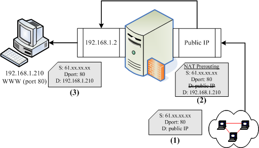

呼呼！终于来到这个地方了！我们准备要架设一个路由器的延伸服务器，就称之为 NAT 服务器。
NAT 是什么呢？简单的说，你可以称他为内部 LAN 主机的『 IP 分享器』啦！
NAT 的全名是
Network Address Translation，字面上的意思是『网络地址的转换』。由字面上的意思我们来想一想，
TCP/IP 的网络封包不是有 IP 地址吗？那 IP 地址不是有来源与目的吗？我们的 iptables 指令就能够修改 IP 封包的表头数据，
嘿嘿！连目标或来源的 IP 地址都可以修改呢！甚至连 TCP 封包表头的 port number 也能修改！真是有趣！
NAT 服务器的功能可以达到类似图 9.1-2所介绍的类似 IP 分享的功能之外，
还可以达到类似图 9.1-4所介绍的 DMZ (非军事区) 的功能！这完全取决于我们的 NAT 是修改：
(1)来源 IP 还是 (2)目标 IP ！底下我们就来聊一聊吧！ ^_^
 9.5.1 什么是 NAT？ SNAT？ DNAT？
9.5.1 什么是 NAT？ SNAT？ DNAT？
在谈到 NAT 的实际运作之前，让我们再来看一下比较简单的封包透过 iptables
而传送到后端主机的表格与链流程(请往前参考图 9.3-4)。
当网络布线如图 9.1-2的架构，若内部 LAN 有任何一部主机想要传送封包出去时，
那么这个封包要如何透过 Linux 主机而传送出去？他是这样的：
- 先经过 NAT table 的 PREROUTING 链；
- 经由路由判断确定这个封包是要进入本机与否，若不进入本机，则下一步；
- 再经过 Filter table 的 FORWARD 链；
- 通过 NAT table 的 POSTROUTING 链，最后传送出去。
NAT 服务器的重点就在于上面流程的第 1,4 步骤，也就是 NAT table 的两条重要的链：PREROUTING 与 POSTROUTING。
那这两条链有什么重要的功能呢？重点在于修改 IP 嘛！但是这两条链修改的 IP 是不一样的！
POSTROUTING 在修改来源 IP ，PREROUTING 则在修改目标 IP 。
由于修改的 IP 不一样，所以就称为来源 NAT (Source NAT, SNAT) 及目标 NAT
(Destination NAT, DNAT)。我们先来谈一谈 IP 分享器功能的 SNAT 吧！
来源 NAT, SNAT：修改封包表头的『来源』项目
你应该有听说过 IP 分享器这个玩意儿，他可以让你家庭里的好几部主机同时透过一条 ADSL 网络联机到 Internet 上面，
例如图 9.1-2联机的方式来说，那个 Linux 主机就是 IP 分享器啦！那么他是如何达到 IP
分享的功能？就是透过 NAT 表格的 POSTROUTING 来处理的。假设你的网络布线如图 9.1-2所示，
那么 NAT 服务器是如何处理这个封包的呢？

图 9.5-1、SNAT 封包传送出去的示意图
如上图所示，在客户端 192.168.1.100 这部主机要联机到 http://tw.yahoo.com 去时，他的封包表头会如何变化？
- 客户端所发出的封包表头中，来源会是 192.168.1.100 ，然后传送到 NAT 这部主机；
- NAT 这部主机的内部接口 (192.168.1.2) 接收到这个封包后，会主动分析表头数据，
因为表头数据显示目的并非 Linux 本机，所以开始经过路由，
将此封包转到可以连接到 Internet 的 Public IP 处；
- 由于 private IP 与 public IP 不能互通，所以 Linux 主机透过
iptables 的 NAT table 内的 Postrouting 链将封包表头的来源伪装成为 Linux 的 Public
IP ，并且将两个不同来源 (192.168.1.100 及 public IP) 的封包对应写入暂存内存当中，
然后将此封包传送出去了；
此时 Internet 上面看到这个封包时，都只会知道这个封包来自那个 Public IP 而不知道其实是来自内部啦。
好了，那么如果 Internet 回传封包呢？又会怎么作？

图 9.5-2、SNAT 封包接收的示意图
- 在 Internet 上面的主机接到这个封包时，会将响应数据传送给那个 Public IP 的主机；
- 当 Linux NAT 服务器收到来自 Internet 的回应封包后，会分析该封包的序号，并比对刚刚记录到内存当中的数据，
由于发现该封包为后端主机之前传送出去的，因此在 NAT Prerouting
链中，会将目标 IP 修改成为后端主机，亦即那部 192.168.1.100，然后发现目标已经不是本机 (public IP)，
所以开始透过路由分析封包流向；
- 封包会传送到 192.168.1.2 这个内部接口，然后再传送到最终目标 192.168.1.100 机器上去！
经过这个流程，你就可以发现到，所有内部 LAN 的主机都可以透过这部 NAT 服务器联机出去，
而大家在 Internet 上面看到的都是同一个 IP (就是 NAT 那部主机的 public IP 啦！)，
所以，如果内部 LAN 主机没有连上不明网站的话，那么内部主机其实是具有一定程度的安全性的啦！
因为 Internet 上的其他主机没有办法主动攻击你的 LAN 内的 PC 嘛！所以我们才会说，
NAT 最简单的功能就是类似 IP 分享器啦！那也是 SNAT 的一种。
Tips:
NAT 服务器与路由器有啥不同？基本上，NAT 服务器一定是路由器，不过， NAT 服务器由于会修改 IP 表头数据，
因此与单纯转递封包的路由器不同。最常见的 IP 分享器就是一个路由器，但是这个 IP 分享器一定会有一个
Public IP 与一个 Private IP，让 LAN 内的 Private IP 可以透过 IP 分享器的 Public IP 传送出去喔！
至于路由器通常两边都是 Public IP 或同时为 Private IP。
|  |
目标 NAT, DNAT：修改封包表头的『目标』项目
SNAT 主要是应付内部 LAN 连接到 Internet 的使用方式，至于 DNAT
则主要用在内部主机想要架设可以让 Internet 存取的服务器啦！
就有点类似图 9.1-4的 DMZ 内的服务器啊！底下也先来谈一谈 DNAT 的运作吧！

图 9.5-3、DNAT 的封包传送示意图
如上图所示，假设我的内部主机 192.168.1.210 启动了 WWW 服务，这个服务的 port 开启在 port 80 ，
那么 Internet 上面的主机 (61.xx.xx.xx) 要如何连接到我的内部服务器呢？当然啦，
还是得要透过 Linux NAT 服务器嘛！所以这部 Internet 上面的机器必须要连接到我们的 NAT 的 public IP 才行。
- 外部主机想要连接到目的端的 WWW 服务，则必须要连接到我们的 NAT 服务器上头；
- 我们的 NAT 服务器已经设定好要分析出 port 80 的封包，所以当 NAT 服务器接到这个封包后，
会将目标 IP 由 public IP 改成 192.168.1.210 ，且将该封包相关信息记录下来，等待内部服务器的响应；
- 上述的封包在经过路由后，来到 private 接口处，然后透过内部的 LAN 传送到 192.168.1.210 上头！
- 192.186.1.210 会响应数据给 61.xx.xx.xx ，这个回应当然会传送到 192.168.1.2 上头去；
- 经过路由判断后，来到 NAT Postrouting 的链，然后透过刚刚第二步骤的记录，将来源 IP 由 192.168.1.210
改为 public IP 后，就可以传送出去了！
其实整个步骤几乎就等于 SNAT 的反向传送哩！这就是 DNAT 啰！很简单吧！
9.5.2 最阳春 NAT 服务器：
IP 分享功能
在 Linux 的 NAT 服务器服务当中，最常见的就是类似图 9.1-2的 IP 分享器功能了。
而由刚刚的介绍你也该知道，这个 IP 分享器的功能其实就是 SNAT 啦！作用就只是在 iptables 内的
NAT 表格当中，那个路由后的 POSTROUTING 链进行 IP 的伪装就是了。另外，
你也必须要了解，你的 NAT 服务器必须要有一个 public IP 接口，以及一个内部 LAN 连接的
private IP 界面才行。底下的范例中，鸟哥的假设是这样的：
- 外部接口使用 eth0 ，这个接口具有 public IP 喔；
- 内部接口使用 eth1 ，假设这个 IP 为 192.168.100.254 ；
记住！当你利用前面几章谈到的数据来设定你的网络参数后，务必要进行路由的检测，
因为在 NAT 服务器的设定方面，最容易出错的地方就是路由了！尤其是在拨接产生 ppp0 这个对外接口的环境下，
这个问题最严重。反正你要记得：『如果你的 public IP 取得的方式是拨接或
cable modem 时，你的配置文件 /etc/sysconfig/network, ifcfg-eth0, ifcfg-eth1
等档案，千万不要设定 GATEWAY 啦！』否则就会出现两个 default gateway ，反而会造成问题。
如果你刚刚已经下载了 iptables.rule ，那么该档案内已经含有 NAT 的脚本了！
你可以看到该档案的第二部份关于 NAT 服务器的部分，应该有看到底下这几行：
iptables -A INPUT -i $INIF -j ACCEPT
# 这一行为非必要的，主要的目的是让内网 LAN 能够完全的使用 NAT 服务器资源。
# 其中 $INIF 在本例中为 eth1 接口
echo "1" > /proc/sys/net/ipv4/ip_forward
# 上头这一行则是在让你的 Linux 具有 router 的能力
iptables -t nat -A POSTROUTING -s $innet -o $EXTIF -j MASQUERADE
# 这一行最关键！就是加入 nat table 封包伪装！本例中 $innet 是 192.168.100.0/24
# 而 $EXTIF 则是对外界面，本例中为 eth0
|
重点在那个『 MASQUERADE 』！这个设定值就是『 IP 伪装成为封包出去
(-o) 的那块装置上的 IP 』！以上面的例子来说，就是 $EXTIF ，也就是 eth0 啦！
所以封包来源只要来自 $innet (也就是内部 LAN 的其他主机) ，只要该封包可透过 eth0 传送出去，
那就会自动的修改 IP 的来源表头成为 eth0 的 public IP 啦！就这么简单！
你只要将 iptables.rule 下载后，并设定好你的内、外网络接口，
执行 iptables.rule 后，你的 Linux 就拥有主机防火墙以及 NAT 服务器的功能了！
|
例题：
如同上面所述的案例，那么你的 LAN 内的其他 PC 应该要如何设定相关的网络参数？
答：
答案其实很简单啊，将 NAT 服务器作为 PC 的 GATEWAY 即可！只要记得底下的参数值：
- NETWORK 为 192.168.100.0
- NETMASK 为 255.255.255.0
- BROADCAST 为 192.168.100.255
- IP 可以设定 192.168.100.1 ~ 192.168.100.254 间，不可重复！
- 通讯闸 (Gateway) 需要设定为 192.168.100.254 (NAT 服务器的 Private IP)
- DNS (/etc/resolv.conf) 需设定为 168.95.1.1 (Hinet) 或 139.175.10.20 (Seed Net)，这个请依你的 ISP 而定；
|
事实上，除了 IP 伪装 (MASQUERADE) 之外，我们还可以直接指定修改 IP 封包表头的来源 IP 呢！
举例来说，如下面这个例子：
|
例题：
假设对外的 IP 固定为 192.168.1.100 ，若不想使用伪装，该如何处理？
答：iptables -t nat -A POSTROUTING -o eth0 -j SNAT \
--to-source 192.168.1.100
|
|
例题：
假设你的 NAT 服务器对外 IP 有好几个，那你想要轮流使用不同的 IP 时，又该如何设定？举例来说，你的 IP 范围为
192.168.1.210~192.168.1.220
答：iptables -t nat -A POSTROUTING -o eth0 -j SNAT \
--to-source 192.168.1.210-192.168.1.220
|
这样也可以修改网络封包的来源 IP 资料喔！不过，除非你使用的是固定 IP ，且有多个 IP 可以对外联机，否则一般使用
IP 伪装即可，不需要使用到这个 SNAT 啦！当然，你也可能有自己的独特的环境啦！ ^_^
9.5.3 iptables
的额外核心模块功能
如果你刚刚在 iptables.rule 内的第二部分有仔细看的话，
那有没有觉得很奇怪，为何我们需要加载一些有用的模块？举例来说， ip_nat_ftp 及 ip_nat_irc ？
这是因为很多通讯协议使用的封包传输比较特殊，尤其是 FTP 文件传输使用到两个 port 来处理数据！
这个部分我们会在 FTP 章节再来详谈，在这里你要先知道，我们的 iptables 提供很多好用的模块，
这些模块可以辅助封包的过滤用途，让我们可以节省很多 iptables 的规则拟定，好棒的吶！ ^_^
9.5.4 在防火墙后端之网络服务器
DNAT 设定
既然可以做 SNAT 的 IP 分享功能，我们当然可以使用 iptables 做出 DMZ 啦！
但是再次重申，不同的服务器封包传输的方式可能有点差异，因此，建议新手不要玩这个咚咚！
否则很容易导致某些服务无法顺利对 Internet 提供的问题。
先来谈一谈，如果我想要处理 DNAT 的功能时， iptables 要如何下达指令？
另外，你必须要知道的是， DNAT 用到的是 nat table 的 Prerouting 链喔！不要搞错了。
|
例题：
假设内网有部主机 IP 为 192.168.100.10 ，该主机是可对 Internet 开放的 WWW 服务器。你该如何透过 NAT
机制，将 WWW 封包传到该主机上？
答：
假设 public IP 所在的接口为 eth0 ，那么你的规则就是：
iptables -t nat -A PREROUTING -i eth0 -p tcp --dport 80 \
-j DNAT --to-destination 192.168.100.10:80
|
那个『 -j DNAT --to-destination IP[:port] 』就是精髓啦！代表从 eth0 这个接口传入的，且想要使用 port 80 的服务时，
将该封包重新传导到 192.168.100.10:80 的 IP 及 port 上面！可以同时修改 IP 与 port 呢！真方便。
其他还有一些较进阶的 iptables 使用方式，如下所示：
-j REDIRECT --to-ports <port number>
# 这个也挺常见的，基本上，就是进行本机上面 port 的转换就是了！
# 不过，特别留意的是，这个动作仅能够在 nat table 的 PREROUTING 以及
# OUTPUT 链上面实行而已喔！
范例：将要求与 80 联机的封包转递到 8080 这个 port
[root@www ~]# iptables -t nat -A PREROUTING -p tcp --dport 80 \
> -j REDIRECT --to-ports 8080
# 这玩意最容易在你使用了非正规的 port 来进行某些 well known 的协议，
# 例如使用 8080 这个 port 来启动 WWW ，但是别人都以 port 80 来联机，
# 所以，你就可以使用上面的方式来将对方对你主机的联机传递到 8080 啰！
|
至于更多的用途，那就有待你自己的发掘啰！ ^_^